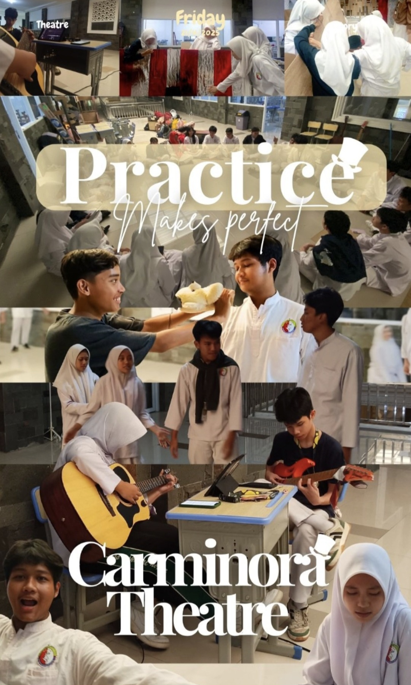
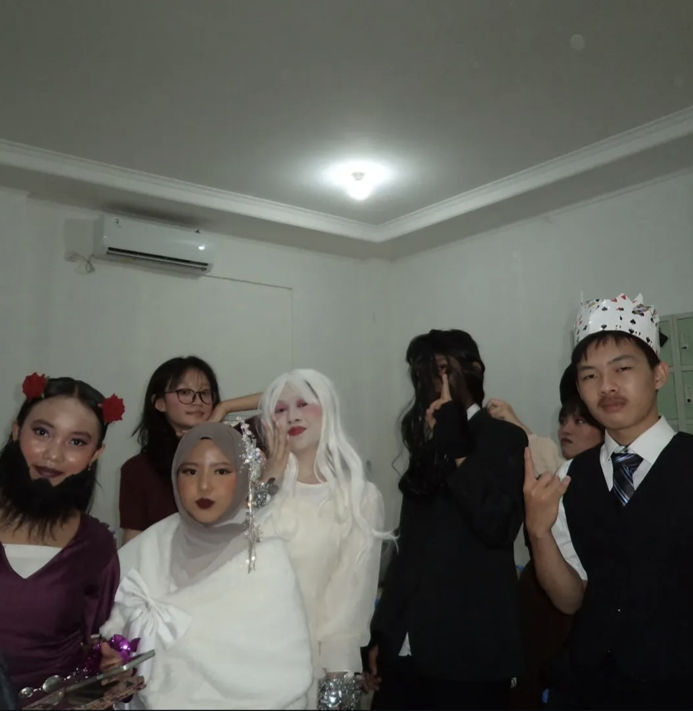
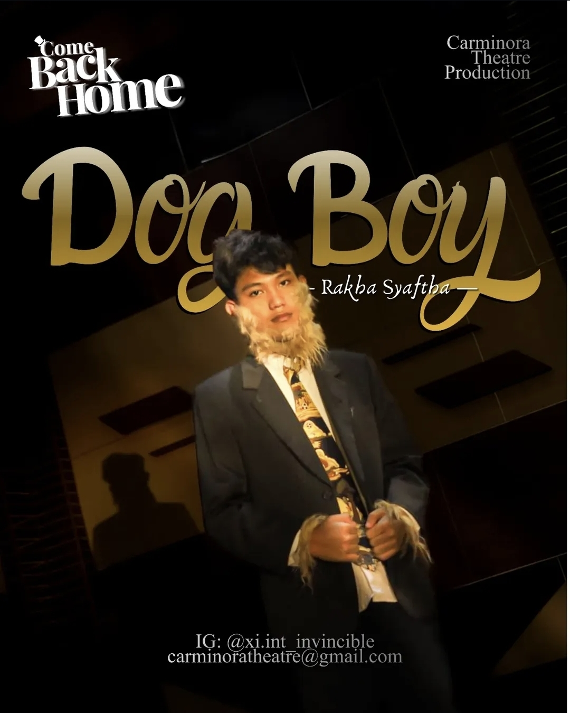
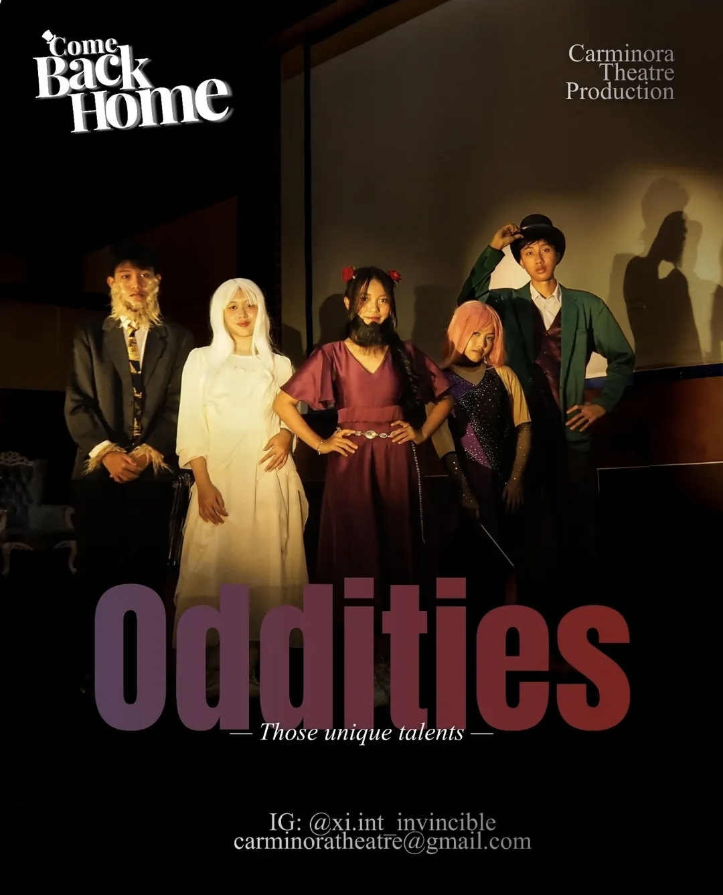
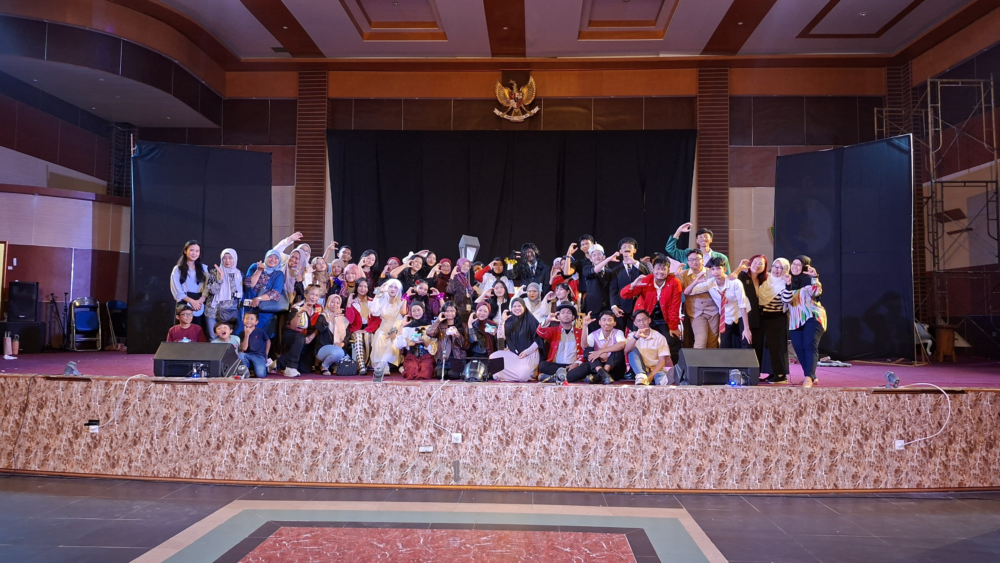
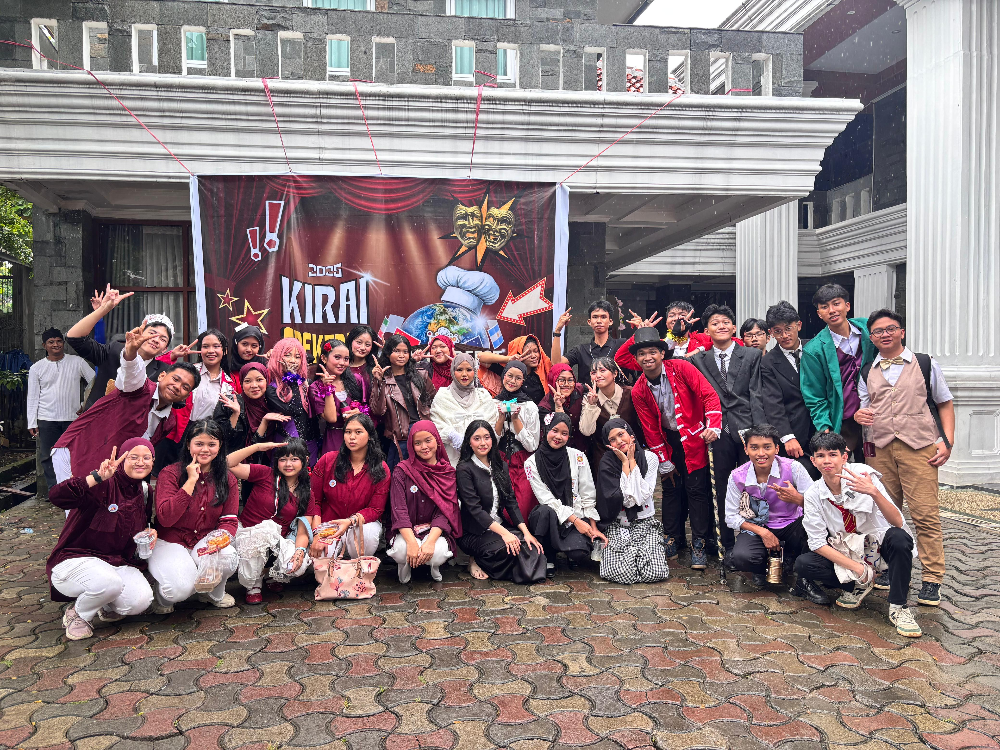
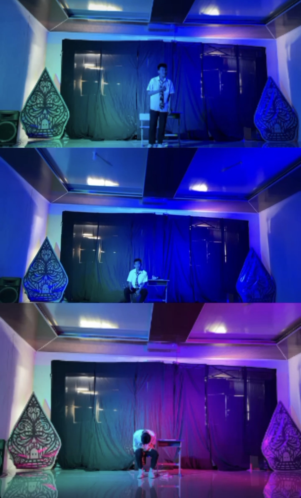

Project 2
Monologue
Pementasan monolog di atas panggung. Buka untuk melihat naskah (Script) dan dokumentasi hari pementasan (D-day).
Lihat hasil proyek ↗Portofolio Rakha Syaftha
The most Exciting Project
Project 1
PTK Project on Roll Film
Roll 1
The Beginning


Roll 2
Best Makeup Theater!!




Roll 3
Welcome to The Circus👀


Project 2
Pementasan monolog di atas panggung. Buka untuk melihat naskah (Script) dan dokumentasi hari pementasan (D-day).
Lihat hasil proyek ↗Project 2
Di Sisi Lain
Oh Tuhan, mengapa engkau rebut semua kebahagiaan dari kehidupan ku? Mengapa setiap hari-hari yang ku lewati terasa berat? Daripada menunggu keajaiban di esok hari, aku lebih berharap esok hari adalah waktunya ajal menjemput ku. Kehidupan ku yang dulu nya penuh dengan kehangatan, rasa kasih sayang, dan kenyamanan seakan menghilang begitu saja tanpa meninggalkan secercah ruang untuk berharap akan ada hal baik yang datang mengganti segala masalah yang datang secara bertubi-tubi.
Saat memutuskan untuk menikah, aku sangat yakin bahwa tidak akan ada masalah yang dapat menyulitkan dan mengancam keharmonisan keluargaku yang sangat ku cintai. Aku merasa sudah menemukan belahan jiwa ku ketika aku bertemu dengan mantan istri ku dan menjalin hubungan selama hampir 5 tahun sebelum aku meyakinkan diri untuk melamar dan meminta restu kepada ayah nya. Saat ayah nya bertanya “Apakah kamu sudah merasa pantas dan mengenal baik putri kesayangan kami?” ucapnya. Saat itu aku sangat percaya diri bahwa aku sudah mengenalnya dengan sangat baik, ia bak penyemangat dan alasan ku untuk hidup selama ini. Secara finansial, aku juga sudah memiliki pekerjaan yang tetap dan dapat menjamin keberlangsungan hidup keluarga ku dan anakku kelak.
Setelahnya, kehidupan ku berjalan dengan penuh kebahagiaan. Aku dikaruniai anak perempuan setelah 2 tahun pernikahan kami. Ketika ia akhirnya lari ke dunia, aku adalah orang yang paling bahagia pada hari itu. Dibandingkan dengan segala harta dan kesuksesan di dunia, dikaruniai seorang anak merupakan sebuah kebahagiaan yang tak dapat disandingkan dengan hal lain nya di dunia ini. Aku tak bisa menahan air mata ku ketika akhirnya aku dapat menggendong nya di kedua tangan ku.
Aku pikir kehidupanku akan selalu berjalan indah seperti ini, namun suatu ketika aku mendapat kabar yang tak terduga, aku terkena PHK dari tempat kerjaku. Aku bertanya atas dasar apa aku di berhentikan seperti ini? Tapi hasil nya nihil. Kesusahan finansial pun menjadi salah satu faktor memudarnya warna dikehidupan sehari-hari ku. Setiap hari hawa didalam rumah ku tidak lagi terasa seperti biasanya. Istriku pun seakan menutupi suatu hal dari diriku. Aku mencoba mengabaikan nya dan mementingkan anak ku dan keberlangsungan hidup keluarga kecil kami.
Pada suatu hari, ketika aku pulang di larut malam setelah hampir seharian penuh mencari pekerjaan aku menemukan bahwa ada sepasang sepatu yang tidak aku ketahui. Aku tidak pernah punya sepatu seperti ini. Aku membuka pintu dan berharap mendapat sambutan dari wanita yang paling aku cintai. Saat aku masuk, yang menantiku bukan lah sambutan yang hangat tetapi fakta bahwa istriku telah membawa pria lain masuk ke dalam rumah kami. Tempat dimana kita menghabiskan waktu bersama kini menjadi tempat dirinya bercumbu dengan pria lain yang ia temui entah dimana.
Emosi ku memuncak, aku tidak dapat menahan kemarahan yang ada dalam diriku. Dadaku terasa panas, sesak, dan nafasku terasa berat seakan aku dapat melakukan tindakan yang nekat pada saat itu. Kami bertengkar hebat pada hari itu. Suara kami bergemuruh mengisi seluruh ruangan. Entah bagaimana, pria yang ia bawa kerumah itu juga menghilang dari kediaman kami. Aku menanyakan kejelasan atas semua ini yang tanpa sadar membangunkan putri kami. Ia menangis sangat keras sampai-sampai aku bergegas menghampiri dan menggendongnya dalam pelukanku yang seketika meredakan amarah ku.
“Jika kamu ingin mengurus nya, silahkan saja urus dia dengan baik. Aku sudah tidak kuat mengurusnya. Kamu kira uang yang dirimu berikan cukup untuk membelikan sekotak susu untuk dirinya? Apa kamu pikir air susu ku akan selalu keluar tanpa memakan apapun? Apa semua nya cukup dengan keadaan mu saat ini? Lebih baik aku menikah dengan orang yang dapat menjamin kehidupanku. Aku memilihmu hanya karena pada saat itu kamu memiliki segala nya. Tapi sekarang? Bahkan untuk makan di esok hari pun kamu perlu menghitung duit ditabungan mu yang hampir habis itu” Aku hanya bisa terdiam dan sebisa mungkin menutupi telinga putri kami dari suara bentakan istriku.
Beberapa hari berselang, istriku menggungat cerai diriku. Dengan segala gugatan yang ia ajukan hampir seluruh harta ku beralih tangan kepada dirinya. Ia hanya meninggalkan ku sedikit dari harta yang ku punya dan hak asuh dari putri kami. Mungkin jika bukan karena nya aku sudah berpikir untuk mengakhiri hidupku sedari lama. Lucu, padahal aku dulu berpikir bahwa mengakhiri hidup tidak akan menyelesaikan segala masalah, tetapi ketika aku mengalami nya sendiri aku selalu berpikir untuk mengakhiri semua nya.
Oh Tuhan ku, aku sudah bertahan sejauh ini, apakah akan ada rencana mu untuk memberikan ku kebahagiaan kembali, atau setidak nya menjamin keberlangsungan hidup putri ku yang paling kucintai. Aku sudah berusaha bertahan sejauh ini ya Tuhan. Aku masi mengingat tawa dari seorang kenalan ku yang mengejek ku ketika aku bertanya tentang lowongan pekerjaan
“Kerja di PT Manuver aja, Manusia Silver HAHAHA” tawa nya yang penuh dengan ledekan kebahagiaan yang bahkan tak dapat ku tirukan selalu menghantuiku. Ya Tuhan jika memang semuanya sudah diatur oleh dirimu, mengapa diriku selalu mengalami kesialan di dunia ini ya Tuhan? Apakah aku secara tidak sadar melupakan mu ketika hidup ku penuh dengan kebahagiaan Tuhan. Tolong akhiri saja diriku ini dan berikan putriku kehidupan yang penuh kebahagiaan di sepanjang hidupnya ya Tuhan.
